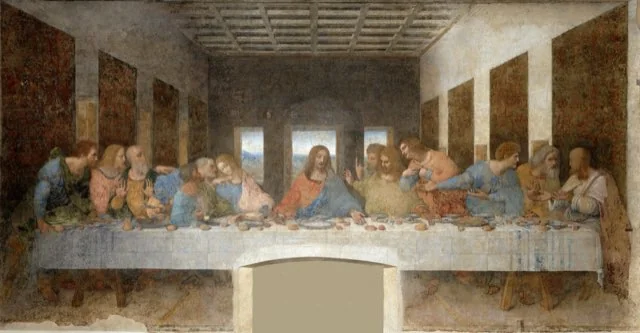
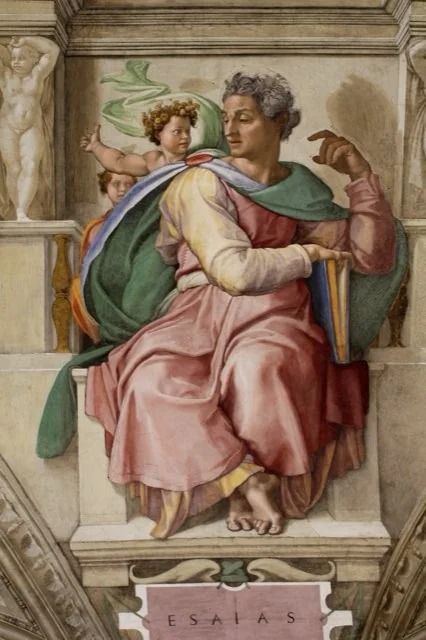
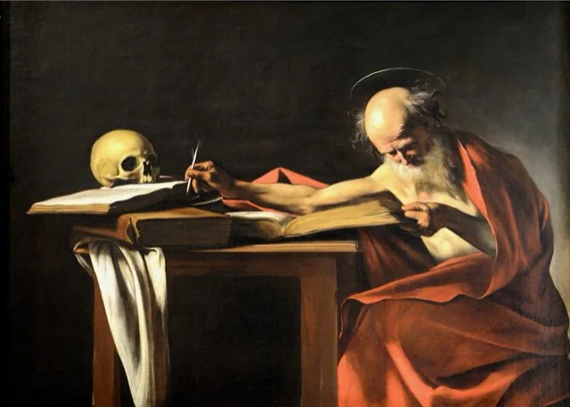
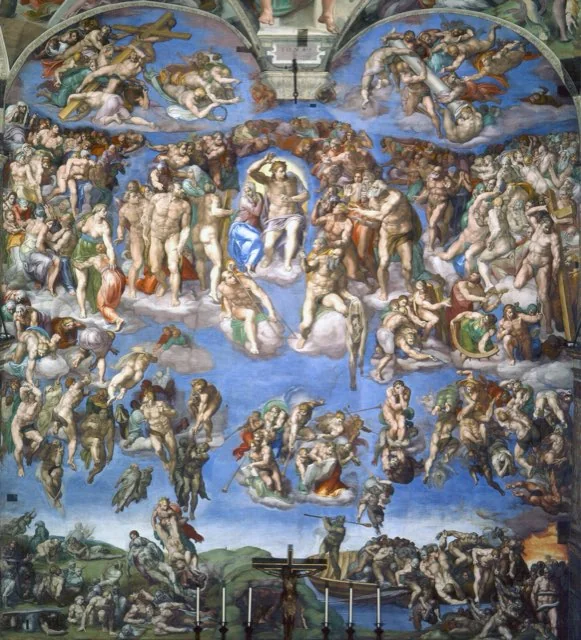
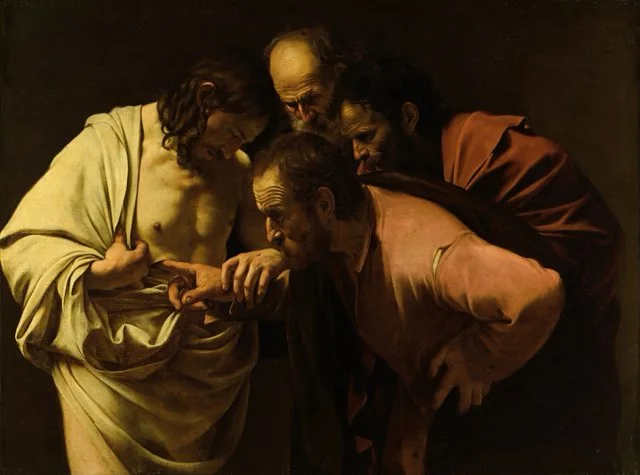
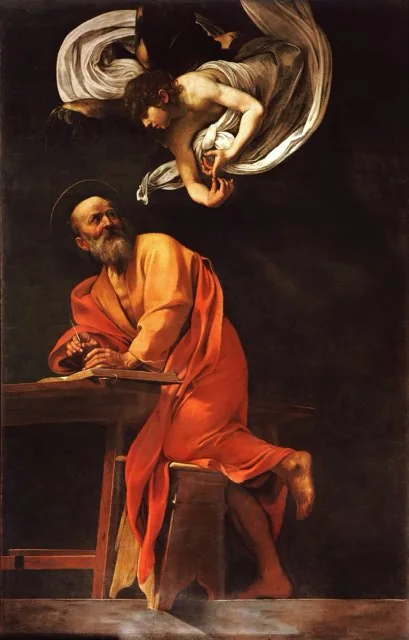

Seven chapters
7 writings-
✠2026
Guide to the research and the world before Jesus
The Jesus Archive research dossier
The dossier’s opening chapter: its scope and standards of evidence, its central findings, a master chronology, the Jewish world of scripture and expectation that made Jesus intelligible, and a controlled comparison with older religions and figures.
→ -

✠2026Jesus’s life: a chronological catalogue of the canonical narratives
The Jesus Archive research dossier
A numbered catalogue of the narrative units and teaching blocks in the four Gospels, from birth to ascension, with the New Testament’s accounts of the risen Jesus, chronological anchors, and a comparison of the resurrection sources.
→ -

✠2026The prophecies associated with Jesus: a critical catalogue
The Jesus Archive research dossier
One hundred scriptural connections applied to Jesus, each labelled as explicit New Testament application, allusion, typology or later Christian reading, with the original setting of each passage, the major disputes, and Jesus’s own predictions.
→ -

✠2026The documentary record of Jesus and the movements that interpreted him
The Jesus Archive research dossier
A chronological register of the written evidence: Paul, the Gospels and Acts, the manuscripts, early Christian writers, Josephus and the Roman authors, Jewish counter-traditions, the apocrypha, rival movements, and Jesus in Islam.
→ -

✠2026From medieval devotion to the present
The Jesus Archive research dossier
A dated register of how Jesus has been encountered, reinterpreted and investigated from Julian of Norwich to 2026: visions and devotions, new religious movements, the historical quests, major discoveries, and recent scientific controversies.
→ -

✠2026What the evidence can and cannot establish
The Jesus Archive research dossier
The dossier’s assessment: the secure historical core, the argument over the resurrection, an item-by-item register of archaeological finds, relics and scientific claims, probability arguments from prophecy, and the questions the evidence leaves open.
→ -

✠2026Sources and further reading
The Jesus Archive research dossier
The dossier’s register of 238 numbered references: scholarship, editions, museum records and institutional statements used across the chapters, grouped by section, each with a note on what it is cited for and where it can be found.
→